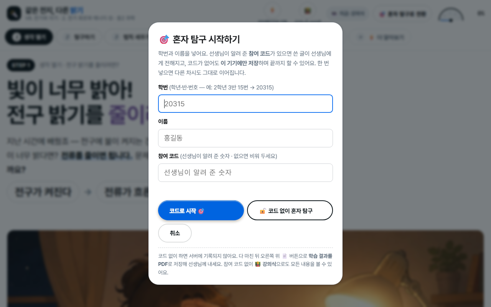
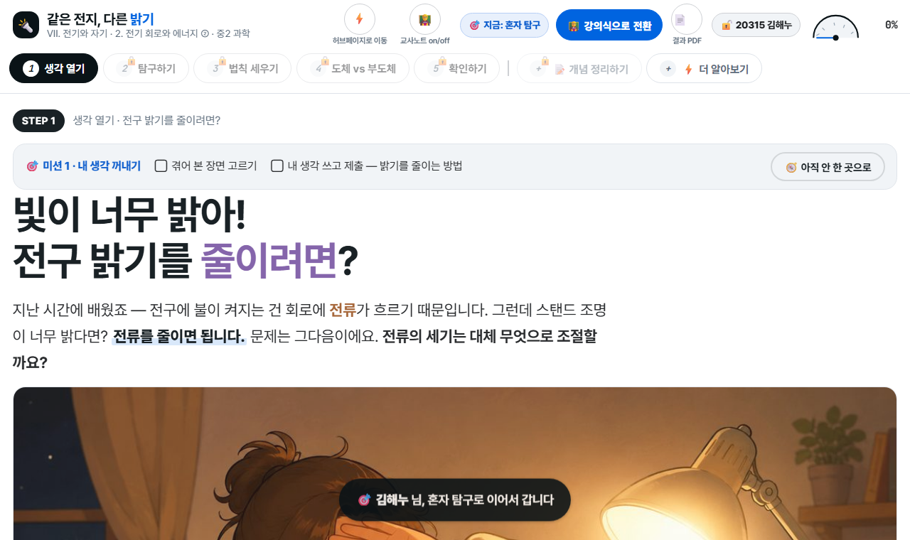
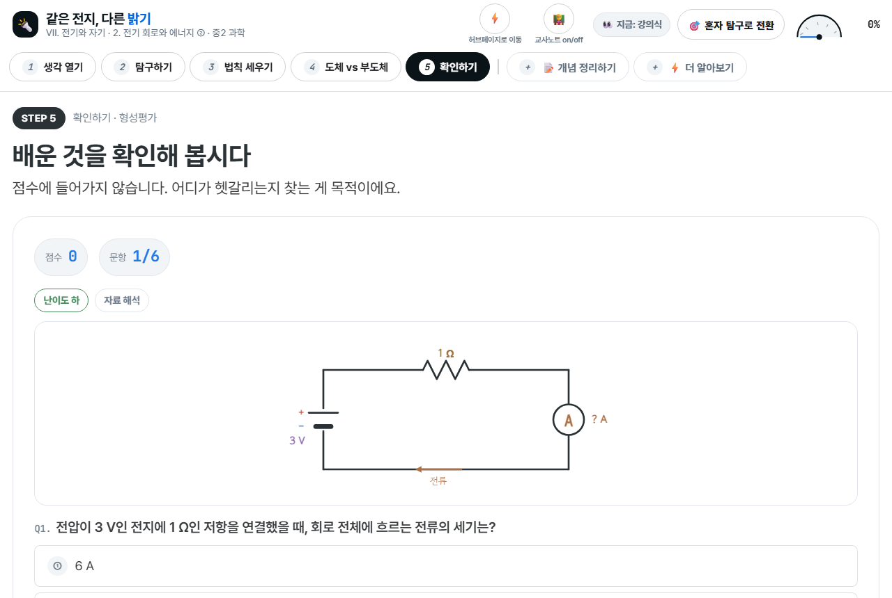
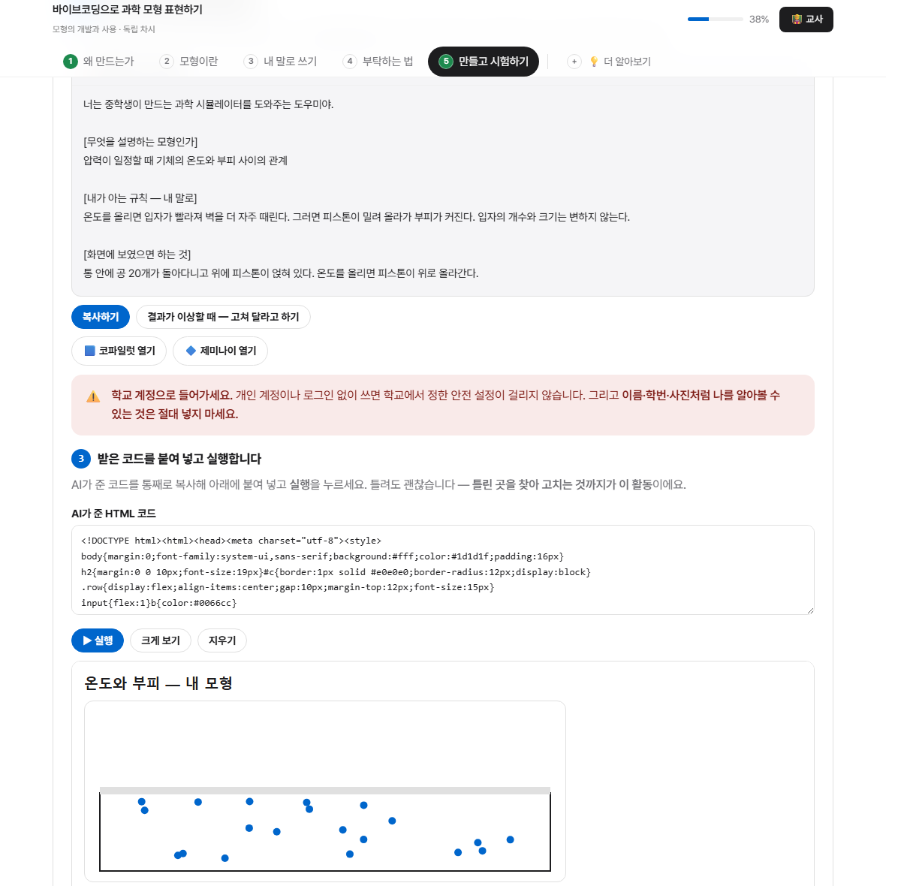
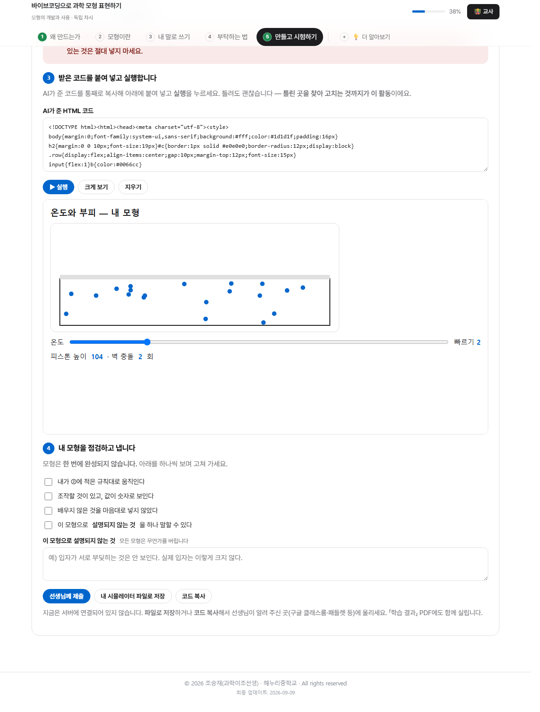
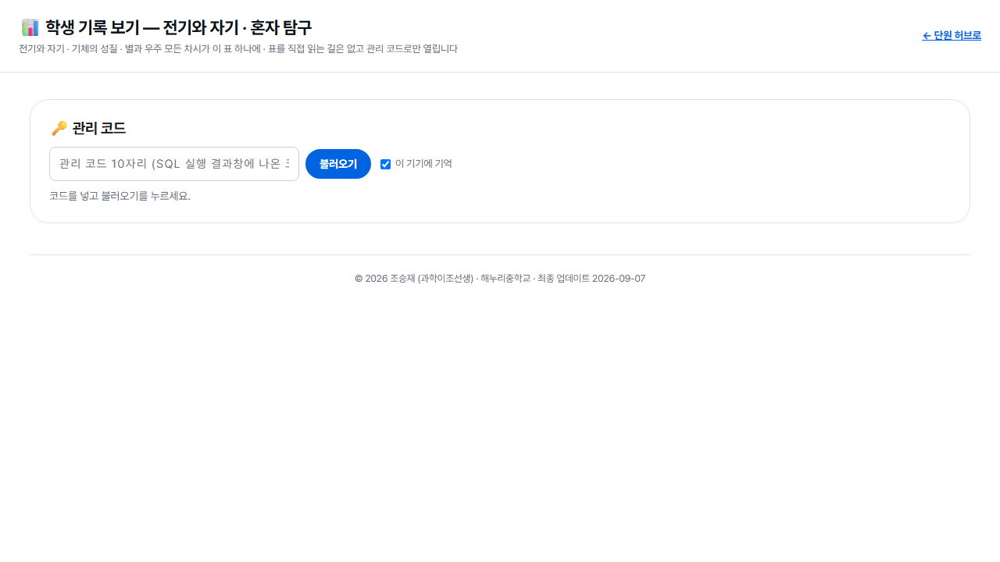

1. 어떤 자료인가요
한 차시가 웹페이지 한 장입니다. 설치도 로그인도 없고, 링크만 열면 됩니다. 전자칠판에 띄워 함께 진행해도 되고, 학생 기기(디벗·크롬북)로 각자 하게 해도 됩니다.

수업은 다섯 걸음으로 짜여 있습니다. 생각 열기 → 탐구하기 → 개념 세우기 → 적용하기 → 확인하기. 여기에 📝 개념 정리하기(선생님과 함께 채우는 빈칸 정리)와 ⚡ 더 알아보기(교과서 밖 이야기)가 덧붙습니다.

2. 두 가지 방식 — 강의식과 혼자 탐구
오른쪽 위 버튼 하나로 바뀝니다. 지금 어느 방식인지 옆에 늘 표시됩니다.

🧑🏫 강의식
모든 단계가 열려 있습니다. 선생님이 화면을 넘기며 함께 진행할 때 씁니다.
전자칠판 수업의 기본값입니다.
🎯 혼자 탐구
앞 단계를 마쳐야 다음 방이 열립니다. 학생이 자기 기기로 스스로 나아갈 때 씁니다.
쓴 글과 문제 결과가 기록으로 남습니다.
🧑🏫 교사노트 버튼은 무엇인가요
수업 중 짚어 줄 지도 포인트, 학생들이 자주 하는 오개념, 발문 예시가 화면에 함께 뜹니다. 수업 준비할 때 켜 두고 읽어 보시면 흐름을 잡기 좋습니다. 학생에게 보일 화면에서는 꺼 두세요.
3. 수업에서 이렇게 씁니다
가. 전자칠판으로 함께 (강의식)
나. 학생 기기로 각자 (혼자 탐구)
학생에게 링크를 주고 오른쪽 위 🎯 혼자 탐구로 전환을 누르게 합니다. 학번과 이름을 넣으면 시작되고, 참여 코드 없이도 끝까지 할 수 있습니다.

다. 남는 시간·보충·결석생
혼자 탐구로 열어 두면 학생이 자기 속도로 진행합니다. 결석한 학생에게 링크를 보내 스스로 따라오게 할 수도 있습니다.
4. 혼자 탐구 자세히
미션으로 한 걸음씩

그 옆의 ❓ 뭘 해야 하죠? 단추는 아래 「지금 뭘 해야 하나요」 안내를 다시 엽니다. (사진은 이 단추가 생기기 전에 찍은 것입니다.)

❓ 「지금 뭘 해야 하나요?」 안내
학생들이 가장 많이 하는 질문이 「이 페이지에서 뭐 해야 해요?」입니다. 그래서 단계에 처음 들어오면 안내 창이 한 번 뜹니다. 순서는 늘 같습니다 —
- 이 단계의 목표 — 여기서 무엇을 알아내려는지 (예: 「저항이 일정할 때 전압을 바꾸면 전류는? / 전압이 일정할 때 저항을 바꾸면 전류는?」)
- 지금 할 일 — 아직 안 한 것 딱 하나를, 어디서 무엇을 어떻게 하는지까지
- 이 단계에서 해야 할 것 전부 — ✅ 끝난 것 · 👉 지금 할 것 · ⬜ 남은 것
「쓰기만 하고 📮 제출을 안 누르면 아직 안 한 것으로 남습니다」처럼, 학생이 실제로 걸려 넘어지는 지점을 짚어 줍니다. 아래 🧭 그 자리로 데려다줘를 누르면 그 자리까지 데려가 테두리를 반짝여 줍니다.
※ 세 단원(⚡ 전기와 자기 · 🎈 기체의 성질 · 🌌 별과 우주)의 모든 차시에 들어가 있습니다.
쓰고 제출하기

확인 문제

학습 결과 PDF

5. 개념 정리는 활동지로
수업 페이지에 📝 개념 정리하기 탭이 있지만, 정리는 종이 활동지로 하시길 권합니다. 화면에서 빈칸을 눌러 확인하는 것보다, 손으로 쓰면서 정리한 것이 훨씬 오래 남습니다.
수업 중에는 화면으로 탐구하고, 활동지에 정리하는 흐름이 좋습니다. 1~2단계는 페이지로 함께 하고, 3단계 개념은 활동지를 나눠 주고 채우게 한 뒤, 페이지의 개념 정리하기 탭으로 답을 맞춰 보는 식입니다.
6. AI로 내 모형 만들기 — 바이브코딩
기체 단원의 기체의 압력과 부피·기체의 온도와 부피 두 차시에는 ＋ 🧩 내 모형 만들기 탭이 붙어 있습니다. 학생이 배운 것을 자기 말로 규칙 문장으로 적으면, 그것을 AI에게 부탁하는 글이 저절로 완성되고, 받은 코드를 그 자리에서 실행해 자기만의 시뮬레이터를 만드는 활동입니다.
🧭 준비 차시가 따로 있습니다
모형이 왜 필요한지, 부탁하는 글은 어떻게 쓰는지 먼저 익히는 「말로는 다 설명했는데」 페이지를 따로 만들어 두었습니다. 학년이나 단원에 속하지 않는 독립 차시라 어느 학년에서 쓰셔도 됩니다. 45분 분량이에요. 기체 차시의 만들기 탭 맨 위에 링크가 있습니다.
학생이 하는 일은 네 칸을 채우는 것뿐입니다

학교 계정으로 쓰게 해 주세요
학생이 쓸 수 있는 것은 학교 계정 코파일럿 또는 제미나이입니다. 개인 계정은 학교가 정한 안전 설정이 걸리지 않습니다. 페이지 안에도 이름·학번·사진을 넣지 말라는 안내가 붙어 있지만, 수업 시작 때 한 번 더 말씀해 주세요. 수업 전에 로그인이 되는지 확인해 두시면 10분을 아낍니다.
받은 코드는 그 자리에서 돌아갑니다

💡 이 활동에서 보실 것은 코드가 아닙니다
한 번에 잘 나오는 학생은 거의 없습니다. 그게 실패가 아니라 이 수업의 본론입니다 — 「내가 적은 규칙과 다른 곳 찾기」가 곧 모형을 평가하는 일이니까요.
순회하실 때 코드 대신 ②번 규칙 칸만 보세요. 막힌 학생은 대부분 규칙 문장이 아직 없는 것이고, 개념 단계로 돌려보내면 풀립니다. 마지막의 「이 모형으로 설명되지 않는 것」 칸이 평가의 핵심입니다.
학생이 만든 것을 받는 법
데이터베이스를 연결하지 않으셔도 그대로 쓰실 수 있습니다. 세 가지 길이 다 열려 있어요.
| 방법 | 학생이 하는 일 | 선생님 준비물 |
|---|---|---|
| 파일로 저장 (권장) | 내 시뮬레이터 파일로 저장을 누르면 홍길동_모형.html 파일 하나가 받아집니다 |
없음 — 구글 클래스룸·패들렛 등 쓰시던 곳에 올리게 하세요 |
| 코드 복사 | 코드 복사를 눌러 채팅이나 문서에 붙여 넣습니다 | 없음 |
| 학습 결과 PDF | 혼자 탐구를 마치고 결과 PDF를 받으면 규칙 문장과 코드가 함께 실립니다 | 없음 |
데이터베이스를 연결해 두신 경우에는 선생님께 제출 버튼이 살아나, 학생이 쓴 규칙·화면 설명·코드·한계가 교사 화면으로 바로 들어옵니다. 자세한 것은 아래 7. 학생 기록을 보세요.
7. 학생 기록 — 데이터베이스는 선택입니다
🔓 이렇게만 쓰셔도 됩니다
학생이 코드 없이 혼자 탐구로 진행하고, 다 하면 📄 학습 결과를 PDF로 받아 제출합니다. 아무 준비도 필요 없습니다. 링크만 주시면 오늘 바로 수업에 쓰실 수 있고, 미션 체크·학생이 쓴 답·문항별 정오가 한 장에 담겨 나오니 수행평가 근거로도 충분합니다.
만든 사람은 여기에 데이터베이스를 연결해 학생들의 혼자 탐구 기록을 모으고 있습니다. 참여 코드를 나눠 주면 학생이 쓴 글과 문제 결과가 선생님 화면으로 실시간으로 모이는 방식입니다. 받아 쓰시는 선생님들은 연결하지 않으셔도 됩니다 — 위의 PDF 방식으로 충분합니다.

직접 모아 보고 싶으시다면
무료 데이터베이스(Supabase) 계정을 만들고 안내된 SQL을 한 번 실행하면 됩니다. 다만 이건 선택입니다. 처음 쓰실 때는 PDF 방식으로 시작하시고, 필요해지면 그때 붙이셔도 늦지 않습니다.
8. 자주 묻는 것
| 이런 때 | 이렇게 하세요 |
|---|---|
| 그래프가 한눈에 안 들어와요 | 브라우저 화면 비율을 100%로 맞추세요. Ctrl+0을 누르면 한 번에 됩니다. 학생 기기에서 확대해 둔 경우가 가장 흔합니다. |
| 학생이 진행한 게 사라졌어요 | 진행 상황은 그 기기의 브라우저에 저장됩니다. 다른 기기로 옮기거나 사용 기록을 지우면 사라집니다. 참여 코드를 쓰면 서버에 남아 다른 기기에서도 이어집니다. |
| 학생이 뭘 해야 할지 모르겠대요 | 단계 위쪽 미션 배너의 ❓ 뭘 해야 하죠?를 누르게 하세요. 지금 해야 할 것 딱 하나를 「어디서 무엇을 어떻게」까지 알려 주고, 🧭 그 자리로 데려다줘로 그 자리까지 데려갑니다. |
| 실험대에서 기록이 더 안 쌓여요 | 기록은 12개까지입니다. 학생이 같은 조건을 여러 번 눌러 표가 차 버린 경우예요. 기록 지우기로 비우고 다시 재게 하세요. 같은 조건을 또 재도 새 줄로 쌓이고 「재측정」 표시가 붙습니다. |
| 모든 단계를 한 번에 보고 싶어요 | 🧑🏫 강의식으로 전환을 누르면 잠금이 풀립니다. 쓴 글은 그대로 남습니다. |
| 수업 시간이 부족해요 | 1·2단계(예상과 탐구)만 하고 3단계 개념은 다음 시간에 이어도 됩니다. 진행 상황이 저장되어 이어서 열립니다. |
| 인터넷이 느려요 | 시뮬레이션은 모두 페이지 안에서 돌아갑니다. 처음 한 번만 열리면 그 뒤로는 끊겨도 진행됩니다. |
| AI를 학생이 써도 되나요 | 학교 계정 코파일럿·제미나이만 쓰게 하고, 개인정보를 넣지 않도록 안내하세요. 자세한 것은 6. AI로 내 모형 만들기에 있습니다. 이 활동을 빼고 나머지만 쓰셔도 전혀 지장 없습니다. |
| 학습지가 필요해요 | 위 5. 개념 정리는 활동지로에서 활동지 폴더를 여세요. 진도에 맞춰 계속 올라옵니다. |
수업 전에 딱 3분만
- 차시 링크를 열어 교사노트를 켜고 지도 포인트를 훑어봅니다.
- 2단계 시뮬레이션을 한 번 조작해 봅니다. 어디서 학생을 부를지 정합니다.
- 학생 기기로 할 거면 화면 비율 100%를 먼저 안내합니다.
- 3단계에서 나눠 줄 개념 정리 활동지를 인쇄해 둡니다.